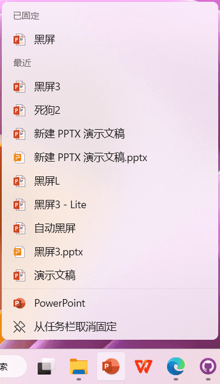
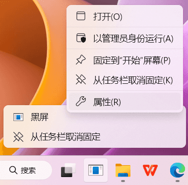

文档和教程
使用方法
一、固定至任务栏上 WPS Office 或 PowerPoint 图标的“快捷访问”栏中
adjust 在 Windows 10及以下设备中：
将黑屏 PPT 拖拽至已经固定好的任务栏图标上，出现“将文件固定到快速访问”提示，松手，此后右键点击（长按）此图标即可找到 PPT 的快捷链接。
adjust 在 Windows 11及以下设备中：
先打开黑屏 PPT，将 WPS Office 或 PowerPoint 固定于任务栏，右键（长按），在最近访问的文件中找到并固定 PPT，即成为快捷链接。
二、制作快捷方式并固定至任务栏
因为任务栏里不能直接放入普通文件的快捷方式，只能是.exe文件的，且Windows 11相比之前的版本有更严格的添加限制，这里介绍最稳妥的方法。
adjust 创建快捷方式
在桌面新建快捷方式，文件地址填写"C:\Windows\System32\taskkill.exe"或其他生僻的无害程序，输入快捷方式名“黑屏”，点击“完成”，将新建的快捷方式拖至任务栏。
adjust 完善快捷方式
右击任务栏上的快捷方式，右击“黑屏”，点击属性，打开快捷方式修改页面。
右击黑屏 PPT，点击“复制文件地址”，粘贴填入快捷方式的“目标”，“起始位置”请填写为空，“快捷键”可以填写（光标闪动时按下）Alt + Shift + D；
右击此处点“将链接另存为”下载黑屏的 .ICO 图标，点击“更改图标”，选中下载好的图标，再点击确定，确定，保存快捷方式的设置以后重启电脑即可看到配置好的任务栏 Shortcut。

三、将黑屏添加到任务计划程序
Win + R打开运行，输入taskschd.msc打开任务计划程序，切换进“任务计划程序（本地） > 任务计划程序库”，右击此处点“将链接另存为”下载黑屏的任务计划程序配置文件，点击右侧的“导入任务...”选择导入。
此后，请校准该自动脚本中的触发器（时间）、操作（启动程序的路径，重要！）是否填写正确！如果不正确，右键点击黑屏自动触发器，点击“属性”修改！修改完成后，请右键点击“运行”做一次测试！

注意事项